Spyder Unittest#
Spyder-unittest is a plugin that allows you to run automatic tests within Spyder and view the results.
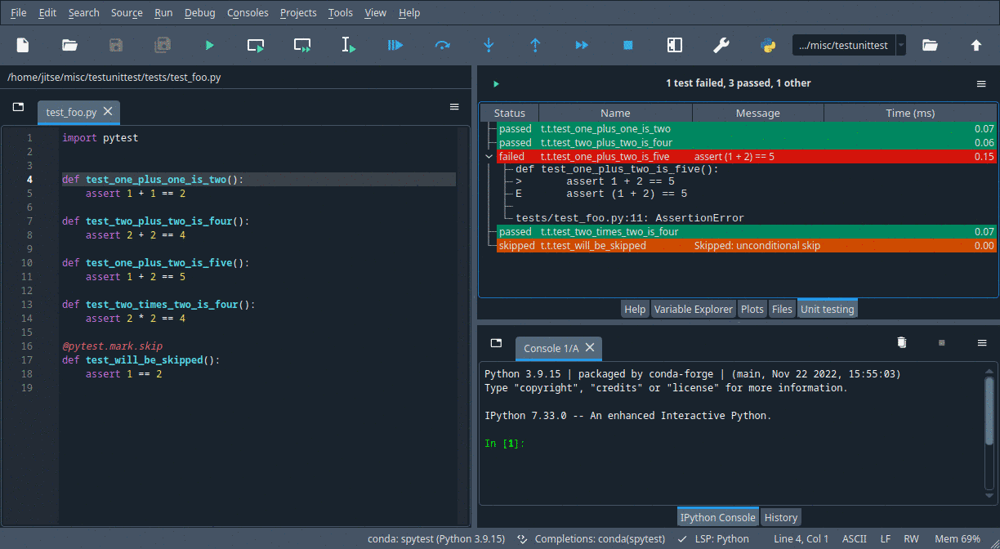
Spyder-unittest can run tests written using the unittest module in the Python library or the pytest library.
Installing the plugin#
If you installed Spyder using conda, the best way to install Spyder-unittest is to run the following command in your Terminal or Anaconda prompt on Windows:
conda install spyder-unittest -c spyder-ide
Important
At the moment it is not possible to use this plugin with the Spyder Standalone installers for Windows and macOS. We’re working to add support for them in the future.
Restart Spyder in order to be able to use the plugin.
When the Unittest plugin is installed, it will be available under the menu item .
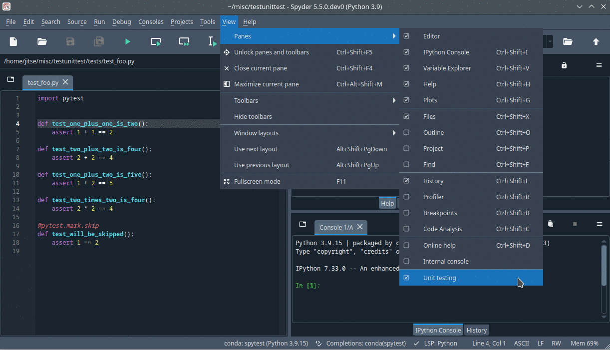
You will see it then as a tab next to the Files tab.
If you plan to use the pytest library, then you also need to make sure that the pytest library is installed.
This needs to be done in the Python environment that Spyder uses to run your code, which can be specified under .
The pyzeromq library also needs to be installed in the same environment.
However, this is likely already the case, because you need the spyder-kernels to be installed in order for Spyder to use the environment and spyder-kernels depends on pyzeromq.
Running tests#
The first step is to write the automatic tests. Follow the usual instructions for the framework that you are using:
If you use the
unittestmodule in the standard Python library, see this basic example.If you use the
pytestlibrary, see this quick example.
After the automatic tests are written, they can be executed. To run the tests, either use menu item or click on the “Start” button with the green triangle (▷) icon in the Unit testing pane. The first time that you run the tests, a configuration window will pop up where you need to specify the testing framework. All options in the configuration window are explained in the section Configuration below.
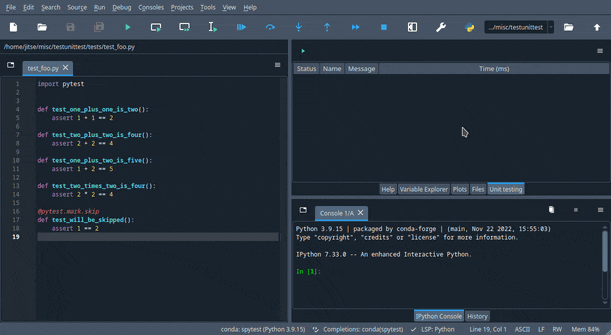
After running the tests, the results will appear in the Unit Testing pane.
If you use the unittest module, then the results will only appear after all the tests have been run.
If you use the pytest library, then the results will be continuously updated, as shown in the image below.
A summary of the results is displayed at the top of the Unit Testing pane; in the image below, this is “1 test failed, 3 passed, 1 other”.
If no tests are found, then the summary will read “No results to show”.
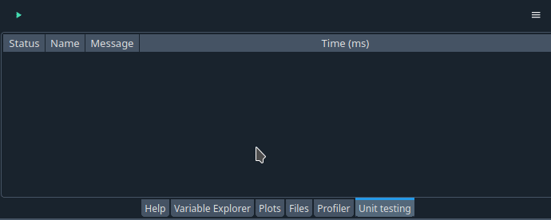
Viewing test results#
The Unit Testing pane shows the results after running the tests. The top shows a summary of test results in the form “xxx tests passed, xxx failed, xxx other”. The results of the individual tests are displayed in a table occupying most of the pane.
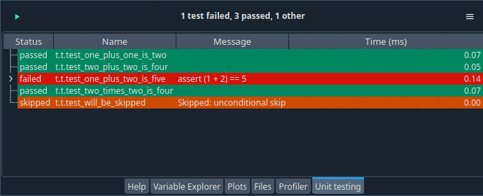
Every row in the table corresponds to one test. The color indicates the result of that test: green for success, red for failure, and yellow for the rest. The table has four columns:
The first column shows the outcome of the test. This is commonly “passed” or “failed”, but there are more possibilities depending on the testing framework.
The second column shows the name of the test. To save space, components of the test name are abbreviated in a way that still makes the names unique. If you hoover over the abbreviated test name, then a tool tip with the full test name will appear.
The third column may show some extra information, for instance an error message if the test failed.
The fourth column shows the time (in milliseconds) that it took to run the test. The
unittestmodule does not report the time, so if you use theunittestmodule as your testing framework then this column will be empty.
Initially, the test results are shown in the order in which the tests are run. You can sort the test results on one of the four columns by clicking on the column header. In particular, you can sort on the outcome of the test by clicking on the header of the first column, as shown in the picture below. This allows you to quickly locate failing tests if you have a big test suite with many tests.
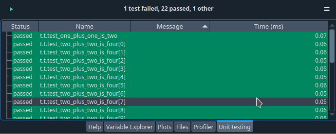
Some tests, especially failing tests, have more than one line of information. To display all the output, This extra information is not shown by default. To expand a row and show the extra information of a particular test, click on the icon at the start of the line. The options menu of the Unit testing pane (“Hamburger” icon at top right) also contains the item , which expands all the rows in the table. The menu item does the opposite.
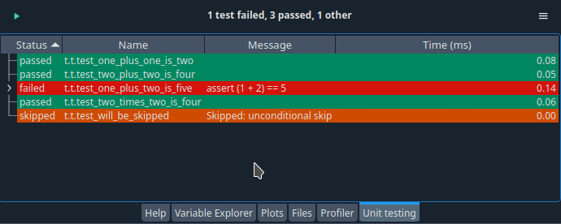
If you double click on a test result, then the Editor pane will jump to the location where this test is defined.
Unfortunately, this functionality is only available if you use the pytest framework.
The unittest module does not record the test location.
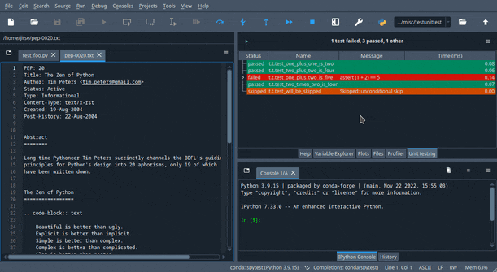
Finally, if you want to look at the raw output of the test run, then click on the item in the options menu of the Unit testing pane. This is a good troubleshooting tool if the results are not what you expect, for instance if no tests are found while you are certain that you wrote some tests.
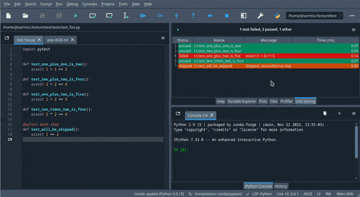
Configuration#
You can change the configuration of the spyder-unittest plugin by clicking on the item in the options menu of the Unit testing pane. This will show the configuration window, shown below. The configuration window will also appear whenever there is no valid configuration for the plugin, for instance on the first time that you run tests.
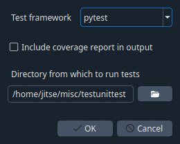
There are two important configuration options that you need to set correctly.
Firstly, you need to pick the testing framework.
You can use either the unittest module in the standard Python library or the pytest library.
Actually, there is a third possibility for the testing framework, the nose library, but this choice is deprecated and we plan to remove it in the next version of the plugin.
Secondly, you need to specify the directory in which the tests are stored. Spyder will find all the test in the specified directory and its subdirectories (at any level) according to the test discovery rules of the testing framework that you are using.
The plugin can also display testing coverage: which lines of your code are executed when the tests are run.
This functionality is only available when using the pytest framework.
You also need to install the pytest-cov library in the Python environment that Spyder uses to run your code before you can do coverage testing.
There is an option in the configuration window to turn on coverage testing.
After running the tests, the coverage results will be displayed under all the test results.
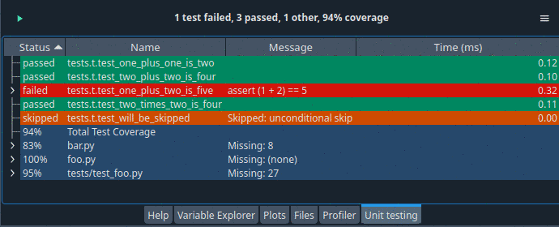
Spyder saves the testing configuration sp that you do not have to specify it every time that you want to run the tests. If you use Spyder Projects, then the testing configuration is associated to the currently open project and will be stored with the project configuration. If no project is open, then the testing configuration is stored in the global Spyder configuration.
The item in the options menu of the Unit testing pane displays a window showing which testing frameworks are installed in the Python environment that Spyder uses to run tests. The window also shows any plugins that come with the testing framework and the versions of the testing frameworks and the plugins. A side-effect of this command is that Spyder will pick up any testing frameworks that were installed since Spyder was started.
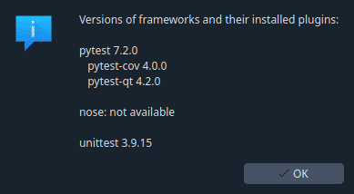